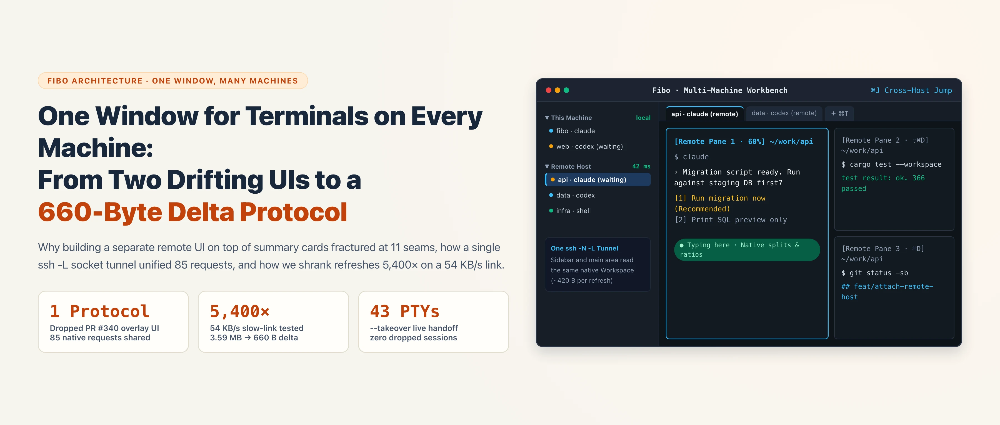
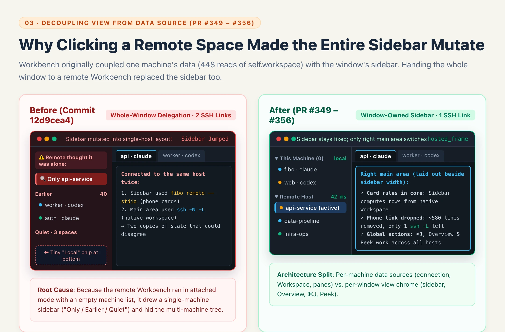

01 Protocol Choice: Why “Summary Cards + a Separate Remote UI” Fractured at the Seams
In Fibo’s single-machine architecture, terminals do not live inside the GUI window (fibo-app). They live in a persistent background daemon (fibo serve), while the window acts as a stateless client connected over a local Unix domain socket (workbench.sock). Before building desktop multi-machine support, Fibo already had a lightweight remote protocol designed for its mobile companion app (ssh host fibo remote --stdio), which summarized each terminal into a flat Card containing only its title, state, and working directory.
Flat cards are enough for checking status and approving prompts on a phone, but the desktop app requires full tab bars, arbitrary split trees, and 85 native RPC requests. Our initial attempt (PR #340) took the seemingly pragmatic shortcut: keep the phone card protocol and rebuild whatever UI pieces the desktop was missing—a remote start page, a remote main area, and a client-side remote split container.

Because local and remote terminals ran on two different data models and two UI layers, behavioral divergence was immediate:
- Disconnected split state: Local split trees live in
fibo servewith draggable ratios and survive window restarts. Remote splits built on top of cards existed only in the local window’s memory, were locked to 50:50, and were completely invisible on the remote machine’s own Fibo window. - Divergent interactions: Pressing
⌘Dlocally immediately spawns a shell in the same directory; on remote, it popped up an Agent picker modal. Pressing⌘Wlocally terminates the shell; on the remote overlay, it merely hid the view.
Worse, mounting the remote UI as an overlay on top of the local workspace created a fragile seam between two state machines. Automated review (Codex) flagged 11 bugs on PR #340 in a single day, every one of them at that seam:
- Silent local shell kill (P1): While a remote terminal or start page covered the main area, the underlying local
nav.tabstayed unchanged. Pressing⌘Wto close the remote view fell straight through toclose_focused()and silently killed the hidden local shell underneath without confirmation. - Stolen keyboard focus: Clicking a remote session from the Overview board set
nav.pending_focus = trueon exit, which immediately yanked keyboard focus back to the hidden local pane on the next frame. - Crossed navigation and array indices: Pressing
⌘[and⌘]traversed locallayout.panesinstead of remote splits; the remote start page tracked its host by array index (machine_idx), so deleting machine A in settings shifted machine B’s start page to machine C.
Comparing existing developer tools confirmed the architectural lesson:
| Product | Where state lives | Connection & protocol model |
|---|---|---|
| VS Code Remote-SSH | Remote VS Code Server | Local UI connects over SSH using the same protocol as local |
| Zed Remote Development | Remote zed-remote-server | Spawns system ssh, sharing the native workspace model |
| WezTerm Multiplexing | Remote mux server | Connects over SSH to a remote Unix socket; local and remote tabs coexist |
iTerm2 + tmux -CC | Remote tmux | Translates tmux’s control protocol into native tabs (prone to seam bugs) |
VS Code, Zed, and WezTerm all keep state on the remote machine and speak the exact same protocol locally and remotely. Translating a foreign summary protocol into native UI was the root cause of our seam bugs. We closed PR #340 and established our first architectural rule: one native protocol and one UI code path for both local and remote hosts.
02 Protocol Unification & Boundary Isolation: Eliminating Implicit Localhost Assumptions
Unlike VS Code and Zed—which install an isolated headless server (such as ~/.vscode-server) locked to the client version—Fibo has a stricter requirement: tabs and splits opened on a remote machine from your local window must appear live in that machine’s own desktop window too. Both windows must connect to the same fibo serve daemon.
Because Fibo already separates client and daemon over workbench.sock, we didn’t need a new protocol. OpenSSH natively forwards Unix domain sockets over a single connection:
ssh -N -o Compression=yes -o StreamLocalBindUnlink=yes \
-L ~/.local/share/fibo/m/<id>/workbench.sock:<remote workbench.sock> remoteEvery terminal pane opens its own stream over that single ssh -L tunnel. Once the window manages this forward automatically, all 85 RPC requests, tabs, and draggable splits work identically to local (PR #342).

The prototype took an hour. The real engineering work was finding every place in the client that silently assumed the daemon ran on the same OS—none of which threw errors:
- 1. Process lifecycle isolation (PID kill guard): When a local window sees a daemon with a different build fingerprint, it either runs
--takeoveror sends a signal to the daemon’s reportedpid. Over an SSH tunnel, thatpidbelongs to the remote OS and could hit an arbitrary local process. Attached clients enforce a strict guard (an_attached_host_is_never_stopped_started_or_stale): never start, stop, or replace an attached daemon. - 2. Delegating directory validation to the remote daemon: Before opening a terminal, the client used to check
Path::new(&cwd).is_dir()on the local disk, falling back to the local$HOMEwhen a remote path didn’t exist locally. We removed client-side disk checks for attached hosts and moved 3-tier fallback into the daemon (host/start_dir.rs): requested CWD → space root directory → remote$HOME. - 3. Remote environment probing & local entry-point gating: On attach, the SSH probe fetches the remote socket path,
$HOME,$SHELL, andmachine-idin one shot (preventing a macOS client from sending/bin/zshto a/bin/bashhost). Hook checks/installs run over SSH on the remote host, and file-opening actions—including the "Open file" button in the Git changes panel—are gated at the singlePane::open_targetentry point. - 4. macOS 104-byte Unix socket path limit (
SUN_LEN) & collision resistance: Placing forwarded sockets under<runtime>/machines/<host>/attached-client/client.sockpushed full Tailscale hostnames (e.g.user@host.tailnet123.ts.net) to 113 bytes, exceeding macOS’s 104-byteSUN_LENkernel limit; simple character replacement also causedalice@serverandalice-serverto collide. Compacting the directory key to<runtime>/m/<8-char-prefix>-<64-bit FNV-1a hash>/keeps paths under 80 bytes and collision-free.
03 Decoupling View Chrome from Data Sources: Why the Sidebar Mutated
Moving from "one window per machine" to switching machines inside a single window exposed the largest structural coupling in the codebase: the Workbench struct held both one machine’s data (448 reads of self.workspace, 66 of self.store, 50 of self.layout.panes) and the entire window’s UI.
To avoid rewriting 448 call sites at once, our first multi-host switch (commit 12d9cea4) instantiated a complete Workbench per remote machine and delegated the entire window render to whichever host was selected.

That shortcut immediately exposed two architectural flaws (shown above left):
- The sidebar mutated into a single-machine layout: Because the sidebar lived inside
Workbench, handing the window to the remoteWorkbenchreplaced the sidebar too. Running in attached mode with an empty machine list, the remoteWorkbenchassumed it was the only computer in the world and drew a single-machine sidebar ("Only <space>", "Earlier 40", "Quiet · 3 spaces"), collapsing the multi-machine hierarchy into a tiny "Local" chip at the bottom. - Two simultaneous SSH connections per machine: The sidebar still polled summary cards over the legacy phone protocol (
fibo remote --stdio), while the main area connected viassh -N -L. Two protocols and two state copies meant the sidebar and main area could disagree.
Across PR #349 through #357, we split the architecture cleanly into two layers without touching the 448 internal self.workspace reads:
| Per-Host Data Source (One per Machine) | Per-Window View Chrome (One per Window) |
|---|---|
| Socket connection, request queue & backoff state | Sidebar: multi-machine tree, filters, folding & scroll offset |
Complete Workspace snapshot & delta base | Overview board, search palette & global ⌘J ordering |
Terminal pane instances (layout.panes) | Peek overlay, theme, font size & keybindings |
| Selected space, active tab & focus on that host | Which machine the main area is currently showing |
The top-level window always renders its own unified sidebar and passes the sidebar’s pixel width (beside) to the active host’s workbench, which draws only the right-hand main area (PR #349). Moving the card-projection rules into fibo_core::remote_cards (PR #353) allowed the sidebar to compute rows directly from each host’s native Workspace connected at startup (PR #352), eliminating the phone-protocol SSH link (PR #356, ~580 lines removed) and leaving one ssh -N -L connection per machine.
04 Slow-Link Sync Protocol: Content-Addressed Deltas from 3.59 MB to 660 Bytes
On a local Unix socket, pushing a revision counter and fetching a full 1.6 MB Workspace JSON takes under 10 ms. When our network link to the remote host dropped to roughly 54 KB/s, full-snapshot polling broke down in two ways:
- 5-second stall timeouts: Hundreds of historical sessions on the remote host produced a 3.59 MB
WorkspaceJSON. Over a 54 KB/s link, whenever the kernel send buffer filled and stalled for 5 seconds with zero bytes written, the daemon aborted withos error 35and the client failed withRPC receive reply: failed to fill whole buffer. - Head-of-line blocking on typing: Because keystrokes and refreshes share the same
ssh -Ltunnel, keystrokes queued behind megabytes of JSON, driving typing latency in the status bar up to 1765 ms.

Layer 1: Stream Compression, Zero-Progress Timeouts & Adaptive Pacing (PR #358 / #362)
Enabling Compression=yes on ssh -L shrank the 3.59 MB payload to 893 KB on the wire (~11s instead of ~35s), and raising the daemon’s write timeout to 30 seconds of zero byte progress stopped mid-reply disconnects (PR #358). We also added adaptive pacing for remote refreshes: if a refresh takes T, the window waits min(T, 10s) before the next refresh so interactive typing always gets at least half the link.
Layer 2: Session-Level Content-Addressed Deltas & Production Data Skew (PR #362 Brief)
On our dev machine, 98% of the workspace JSON lived in sessions and session_contents. In PR #362, we introduced Brief(last_stamp, Request) so the daemon diffs sessions against an LRU ring of the last 16 snapshots it sent (using a 64-bit FNV-1a content hash rather than revision, which resets if the daemon restarts) and returns only changed sessions.
On the dev box, refreshes dropped from 1.68 MB to 14–22 KB. Yet when we deployed to the production remote machine and measured again, a refresh with zero session changes still transmitted 352 KB (81 KB compressed):
Largest top-level fields in rest | Production remote size |
|---|---|
terminals (677 historical & live terminal records) | 186 KB |
task_logs | 81 KB |
outcome_history | 66 KB |
tasks | 39 KB |
agent_launches | 36 KB |
The dev box only had 4 terminals (rest < 3 KB); the production remote host had 677 terminals, making the un-diffed rest payload 352 KB on every poll.
Layer 3: Top-Level Field Hashing & Clean Base Isolation (PR #380 BriefAll)
Before writing item-level diffing for 677 terminals, we sampled the remote workspace 12 times over 2 minutes. None of those five fields changed once—they only mutate when a terminal opens/closes or a task finishes. Hashing each top-level field in rest and omitting unchanged fields (BriefAll, PR #380) was sufficient.
To prevent local UI mutations (such as live split-divider drag previews on self.workspace) from surviving across sparse replies where unchanged fields are omitted, the client stores an untouched copy of the host’s state (Kept) and applies deltas strictly onto Kept before handing a fresh copy to the UI. On the real remote host, a refresh dropped from 3.59 MB → 352 KB → ~660 bytes (~420 bytes compressed, a 5,400× reduction), completing in milliseconds on a 54 KB/s link.
05 Multi-Host Concurrency & OS Lifecycle: Input Leases, Live Handoff & Signal Inheritance

1. Multi-Window Input Lease & Visibility Gating (PR #367)
When both the remote machine’s own window and a local window view the same terminal, simultaneous typing would interleave keystrokes. Fibo enforces an exclusive input lease ("last-opened window takes input; the other shows Read only · click to take over"). Right after shipping that rule, launching the local window caused the remote machine’s own window to flip to read-only before the user ever clicked the remote machine. Why? Startup created a hidden background Workbench per machine to feed the sidebar, and its initializer attached to the remote’s first tab and claimed the input lease. Gating pane creation and lease acquisition on drawn_last_frame (PR #367) ensured undrawn background workbenches never steal focus.
2. Zero-Downtime Handoff of 43 Live Terminals (--takeover)
Upgrading both machines to BriefAll couldn’t interrupt the 43 live terminals running on the remote host. Launching the new binary with fibo serve --takeover transfers every live PTY file descriptor and scrollback buffer from the old daemon before it exits (logged as handed 43 terminals to a newer host). We also avoid building and signing over SSH on macOS: locked SSH Keychains block Developer ID signing, while ad-hoc signing (codesign -s -) changes the binary identity on every build and triggers endless TCC permission prompts.
3. Why Orphan ssh -L Processes Ignored SIGTERM (PR #360)
During upgrades, we noticed an orphaned ssh -N -L process left by a crashed window ignored SIGTERM and needed kill -9, and stopping an old daemon always waited the full 5-second timeout. The root cause: macOS AppKit sets SIGTERM to SIG_IGN on the GUI process, and under POSIX, fork + exec resets caught signals but inherits SIG_IGN across exec. Resetting SIGTERM to SIG_DFL in the child’s pre_exec hook (PR #360) fixed both.
Summary: Five Engineering Principles for Multi-Host Desktop Apps
- 1. Forward the native socket instead of maintaining two UIs: Forwarding
workbench.sockoverssh -Lso local and remote share all 85 RPCs eliminated an entire class of UI seam bugs. - 2. Separate per-host data sources from per-window view chrome: Keeping the sidebar, Overview, and
⌘Jat the window level while scopingWorkspaceand panes per host prevented sidebar mutations and cut two SSH links down to one. - 3. Audit silent “localhost” assumptions: Guard against remote PIDs passed to local
kill, localis_dir()checks, local$SHELL/Hook reads, and macOS’s 104-byte Unix socket path limit. - 4. Measure deltas on production data and isolate the clean base: A 4-terminal dev box hid 352 KB of metadata across 677 production terminals; sparse field deltas require an untouched host base (
Kept) separate from live UI drag previews. - 5. Verify on real machines over slow links: Undrawn workbenches stealing input leases, 43-terminal live takeovers, and
AppKitSIG_IGNinheritance only surface on real multi-host hardware.
Still ahead: local predictive echo when typing p95 exceeds 200 ms (similar to WezTerm); opening remote terminal file links in a local editor; and computing context rings and Git ahead/behind counts on the remote daemon. Verified between Macs; as of v0.1.3, Windows x64 and Ubuntu 24.04 have preview packages.